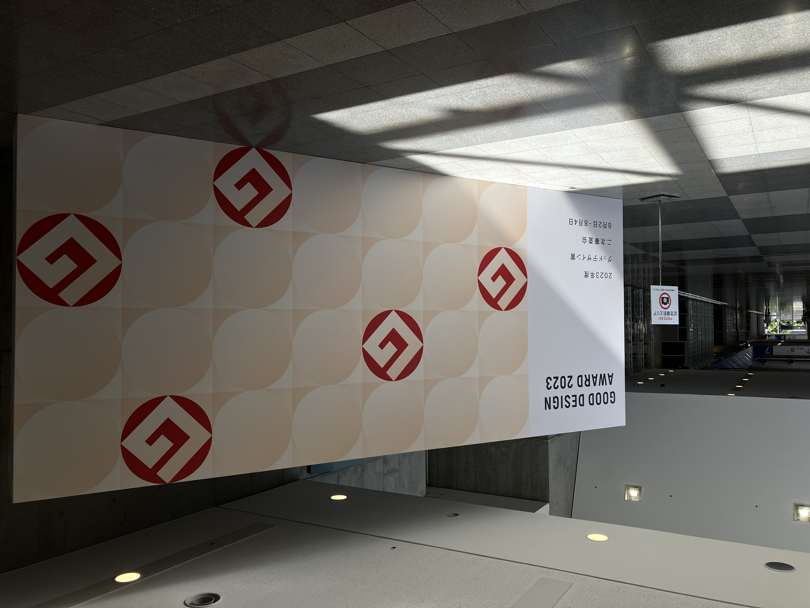

思ってたこと、全部言います。（～グッドデザイン）
2024/08/06
こんなこと思ってました
これが投稿されているということはもう私は東京に着いていて、グッドデザイン賞審査会のスタッフバイトをしていることでしょう。（予定的に間違いとは言い切れない）
そして今はというと、東京に向かっている新幹線に乗っています、不思議ですね新幹線って。確かに移動はしているけど新幹線の慣性系から見るとみんなその場で大人しく静止しているだけっていう。そんな雑談はどうでもいいですね、（それより充電してきたはずのパソコンがもう落ちそう、ふざけてる場合じゃない。）今回はその移動中にどうにか静止しているだけ回避したいので前々からブログのネタにしようと思っていたことを一気に洗い出そうと思っています。
まぁ東京に着くまでに時間はたっぷりあるわけなので、思いついたものポコポコ挙げていこうかな
ネタ帳一覧
・学び100成功0のSNSマーケティングバイトの話
・「チャッピー」の由来（おちゃぴん）
・「広角レンズがあれば、」は嘘すぎる
・「楽をする」と「楽する」は違う（楽しよう。）
・世界地図が世界を狭くしている説（designは？）
・好きな数学話をするだけ
・「おすすめのレンズは？」とかいう愚問（迷惑です）
最近歩きながら考えていたことはこんな感じですね～。あ、これもネタになるかな？「歩きながら考えたことをただ綴る」みたいな。とりあえず、これだけでは案がまだ少ないしフワフワしているので系統ごとに分けてみます。
まずはこんな感じ？
自論、意志表明系
・「広角レンズがあれば、」は嘘すぎる
・「おすすめのレンズは？」とかいう愚問（迷惑です）
・「楽をする」と「楽する」は違う（楽しよう。）
・世界地図が世界を狭くしている説（designは？）
なんか多いな...自論語り...。まぁいいか、つぎは、
自分について
・「チャッピー」の由来（おちゃぴん）
・学び100成功0のSNSマーケティングバイトの話
思考垂れ流し
・好きな数学話をするだけ
・歩きながら考えていることメモ
って感じで分けられそうですね。これ見る感じやっぱり（やっぱり!?）自論を人に話したいだけの説教人間でしかないですね～オホ～。個人的にはこういう自論っていつもの動画の中で端的に冗談レベルで混ぜておいた方が見ている人も気持ち悪くないし面白く伝わる（本当にそうかな！）と思うのでそっちに回していった方がいいんだろうなとは思っています。
このブログは閲覧数も測ってないし、もちろん金にも何にもならないので好きなこと書けばいいとは思うんですが。やっぱりSNSの投稿物制作のバイトに携わってきた身としては面白いサムネとか文章作りたいな～とも思うんすよね。これもネタに入れましょうか、「サムネタイトル作ってみる」みたいな。